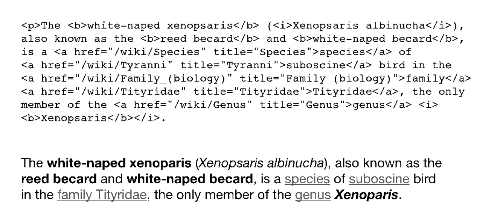

During my time at Apple, I worked on a certain class of hard problem, software challenges whose near-term solutions would have an immediate impact on our products. Soon after we shipped Safari, I found myself struggling with the hardest programming problem that I’d ever tackled. I also had a setback that nearly derailed my Apple career. By working through these difficulties, I learned an important lesson about collaboration, Apple style.
We initially released Safari as a beta, and within a day or two, we discovered a nasty bug that could delete data from people’s computers. We rushed to publish a fix, but even with this glitch, the general view among Apple leadership was that our browser exceeded expectations. Scott Forstall was so pleased that he promoted Don to lead a new internet technologies group that included Safari, our email program, and iChat, our instant messaging software.
For me, the outcome was less spectacular. Don’s promotion had left an opening for the Safari team manager. I put myself forward, but the job went to one of my teammates, Darin Adler. The decision-making process seemed too short and too secretive to me, given how hard I had worked on the browser and my founder’s role on the team. Indeed, I had just one brief conversation with Don before the decision about his replacement came down.
I couldn’t blame Darin for wanting the job, and he was certainly qualified, but I was upset nonetheless—so upset that I considered leaving Apple for Google. I sent an email to see if the web search company had any interest in hiring me, and they responded by inviting me in for two days of interviews. Unlike my brief conversation with Don, the interviewers at Google put me through my paces, sending me from engineer to engineer, with each asking me tough coding questions and watching me work out my answers on a whiteboard and on a laptop they provided for my use.
Apparently these interviews went well, because when the Google recruiter called to offer me a job a couple days later, she asked me my salary and stock expectations right over the phone, punctuating it with the phrase: “Think BIG!”
Unfortunately, at least from a financial perspective, I never got into naming numbers or thinking BIG!, because I told her that I had decided to remain at Apple.
By then Scott had heard that I was disappointed over the Safari management decision. He reached out to me. We met for a couple of hours, and he made it clear he didn’t want me to go. He urged me to put the management change behind me, and, to help me do that, he said he wanted to know more about what made me tick. After we talked for a while, he concluded, correctly, that I liked projects much more than politics. Once he understood that, he said he might have an interesting project idea for me and that we would get together again in a few weeks to go over it.
That suited me. I really didn’t want to leave Apple. I shared the company’s focus on making great products, and I wanted to make more. Scott’s overall vote of confidence in me meant more than any specific thing he said, and it made the difference in my choice to remain. I came away feeling that as long as I knew I’d be working with him and could reach out to him if I needed to, I’d be fine.
As promised, Scott called me in to his office a few weeks later. He began by describing how email was evolving—it was expanding beyond its origins as a text-only medium. Browser-based email services like Hotmail were fast becoming more popular, and Mac users were getting more and more email with web pages as the body of the message. We were still a decade away from ubiquitous social networks like Facebook, and back then, email was the best way to share digital content. Companies used email to send marketing brochures, spammers used email to directly target advertisements to the masses, and people used email to compile family vacation photo albums using apps like Apple iPhoto.
Scott said that more and more of these “rich” messages were coming through using web technology as the means to style the text and lay out the images. The trouble was, he told me, our Mac email program couldn’t edit or reply to these web-based messages. Scott had a solution in mind. He suggested we could use WebKit, the core of our new browser code, to improve the email experience on the Mac. The technical challenge was that, as computer users, we browse the web. Other than filling out forms, as on ecommerce sites, we don’t edit web pages while we read them. To make his plan work, he wanted me to enhance and adapt our browser code so people could treat the entirety of an emailed web page like it was a word processing document, editing the text and pictures in all the usual ways: typing new text, selecting passages with the mouse, deleting with the keyboard, cutting, copying, pasting, and so on. Scott explained that we were reaping the dividends of our investment in Safari and WebKit, since now we could decide for ourselves about the new web technology features we wanted in future Mac products. Web page editing for email was just such a technology. Scott asked me if I thought this sounded interesting.
I had never worked on a word processor but I didn’t want to disappoint Scott, so I nodded and said, “Um . . . OK.”
Scott treated this as an enthusiastic affirmation, and he pressed ahead to close the deal. He referred to Steve’s fixation on email: Our CEO had continued sending email on a NeXT computer for several years after rejoining Apple because he thought the experience offered by his former company’s software was superior.
I assured Scott that I knew about Steve’s high standards—for email and for everything else. Scott went on to say that Steve wanted us to nail this web page editing feature, that The Man himself would be watching the progress on this email project, that if I did a great job, it would improve the email experience on our platform, and that I was the perfect person to do the work.
Invoking Steve was certainly part of Scott’s sales pitch to get me to take on this web page editing work, but I had the sense that something else was going on, that Steve was breathing down Scott’s neck. Scott not only wanted this work to get done—he needed it done.
This conversation illustrates an important aspect of how Apple software development worked: Leaders like Scott offered project opportunities to programmers like me. Scott was right when he suggested there weren’t that many engineers who were in the position to make WebKit editing a reality. Steve and Scott wanted this new feature. If Apple was going to deliver it, someone had to “sign up” for the work and get it done.
I first encountered the term “signing up” in Tracy Kidder’s Soul of a New Machine, a Pulitzer Prize–winning book on the quest to develop a new minicomputer at Data General Corporation in the late 1970s.1 Kidder used the term to describe the moment one of the company’s young and harried engineers took on the personal responsibility for delivering a project. At Apple, we didn’t say “signing up” as formally or explicitly as Kidder tells us they did at Data General, but Kidder’s stories had seeped into high tech over the years, and many Apple people had read his book (I sure did, more than once), so we were all aware of the signing up concept, and we lived it, even if we didn’t say it.
The closest term we had in the Apple lexicon was more management speak: directly responsible individual (we pronounced it as D-R-I in conversation), the person who has to do whatever is necessary to develop a piece of hardware or software, some technology, some critically needed thing—the DRI was the person with their butt on the line.
When I was sitting there with Scott, I could have refused to sign up to become the DRI for his email editing idea, or asked for another project, or told Scott I was leaving for Google, but as long as I remained a software developer, a technologist, a maker of things, the project offers would change only in detail, not in kind, so I signed up.
“OK, Scott. I’ll do the best I can.”
He liked that answer.
That’s how I became responsible for adding web page editing to WebKit, a technology I knew next to nothing about.
* * *
When I started this email editing work, hitting “reply” on an emailed web page caused the Mail program to try to stuff the web page into the simple email composer Apple Mail used in those days, a system that offered little more than basic text stylings (bold, italic, underline). Since this email composer wasn’t a web browser, it couldn’t interpret web pages properly. Replying to an emailed web page started you off with “On Jan 31 2003, so-and-so wrote:” but what followed all too often was scrambled and illegible web content.
My job was to prevent such garbled emails. To make that happen, I had to swap out the simple email composer from Apple Mail, install WebKit in its place, and make the change without anyone noticing. I had to make email composition work just as it had before for simple one-line messages and longer threaded conversations but ensure that Mail would no longer choke on web page email replies.
After a few days of thinking, I figured out where I should begin programming for my new project. I decided to add an insertion point, also called a caret or cursor, the blinking line that follows you around as you edit text. I had rudimentary insertion point demos working within a month, but it took me almost a year to get WebKit editing working well enough that I could begin to edit the web pages I typically received in my email inbox. This was longer than I had expected, but for once in my Apple career, the schedule minders weren’t breathing down my neck (for reasons I didn’t know, and I wasn’t eager to find out).
There were a host of editing features to add, including typing and deleting text, support for undoing these operations, and testing that none of my editing additions slowed down web page load performance. Even though I had made good progress after those many months of concentrated effort, I was still tripping over bad bugs with the first feature I added: the placement, movement, and behavior of the blinking insertion point.
Before starting on this project, I had never thought much about the insertion point as I sent texts, composed emails, posted to internet message boards, and wrote longer reports and presentations in programs like Keynote, Word, and PowerPoint. I was finding out that this familiar feature belied the underlying complexity of word processors and the subtle behaviors they exhibit.
To illustrate the nature of my difficulties, consider these two behavioral rules for the insertion point, one simple and one complicated:
Simple Rule: The insertion point stops blinking while you type and resumes blinking a fraction of a second after you cease tapping keys.
Complicated Rule: In a normal block of text, the end of a line can hold an infinite number of spaces. This might seem absurd, but this is the rule that makes left-aligned text possible. Without it, blocks of text with multiple spaces on the end of the line might become “ragged” on the left margin. To see this rule work, position the insertion point after the last character on a line in the middle of a paragraph of text that is broken into several lines. Start typing spaces. Once the insertion point reaches the end of the line where text breaks into the next line, adding yet more spaces moves neither the text nor the insertion point. Additional spaces are collapsed into nothing. To see all your spaces, resize the window or cause the text to reflow in some other way by adding or deleting characters.
Before I started on this WebKit editing project, I had an internalized sense that these rules were making my word processing experience work as I expected, and I’m sure I would have noticed right away if either of these rules suddenly disappeared—for example, why is my left-aligned text now ragged on the left margin? Yet I didn’t understand these rules intellectually. Now that it was my job to make WebKit function as a full-featured word processor, I no longer had the luxury of getting by on my built-up intuitive feel for typing and editing in email. I had to become an expert in all the nuances of word processors. There’s no programmer’s handbook on this topic, so I had to run experiments to discover the rules on my own. I needed to come to grips with the letter and spirit of all these rules, both simple and complicated. In my studies, I spent many hours poking and prodding different word processors, Microsoft Word, the Apple Mail composer, and BBEdit, the editor I used to write my programs—testing, tapping, typing, clicking. Little by little, I learned about more rules and how to write code to implement them. As I did so, I became stuck.
I couldn’t get the insertion point to behave correctly in all cases. Most times it worked as expected, but then it would suddenly misbehave. Sometimes the blinking line would pin itself to one spot and cease to move. Sometimes it would disappear altogether after I clicked with the mouse. Sometimes it would skip characters, or lines, or jump around seemingly at random as I typed. Sometimes tapping a key would make it reappear, and sometimes not. My insertion point woes were the worst kind of bugs a coder can have, since the bad behavior didn’t always recur if I backed up and took the same steps again.
Programmers have a name for such defects. We evoke the uncertainty principle from quantum mechanics and the man, Werner Heisenberg, who developed it. My insertion point glitches were “heisenbugs.” And fixing insertion point heisenbugs was the hardest programming problem I ever tried to solve.
To give a complete technical explanation of the problems I was wrestling with to make my insertion code produce the correct visual outcome, I would need to describe the format used to define web pages, HTML (Hypertext Markup Language), plus more esoteric-sounding things such as DOM node structures, tree traversal algorithms, and more. Instead, I’ll offer an analogy. Consider the following:
A customer walks up to a counter in a bakery to place an order for a customized cake. The customer says, “I would like a cake that says ‘Happy Birthday’ and, below that, ‘Tom.’”
How do these two people confirm to each other that they’ve gotten everything right? It becomes even more difficult if I strip away some of the helpful punctuation and capitalization to more closely mimic the experience of two people speaking to each other:
“I would like a cake that says happy birthday and below that tom.”
We shouldn’t be too surprised that, at least some of the time, there’s miscommunication about how this cake should look. Maybe the customer didn’t speak clearly. Maybe the baker suffers from a chronic deficit of common sense or has simply had a long day. Whenever any such breakdowns happen, the result can be a jocular jumble.
In my sample order, only three of the words of the customer request—“Happy,” “Birthday,” and “Tom”—are supposed to be written on the cake, but there also was a positioning directive in there, and all this knowledge is encoded implicitly in the original spoken request. Most times people can figure it out from context, but sometimes they get it wrong, as is shown by a Google image search for “birthday cake fails.”
Word processors are like birthday cake orders. When you type in a word processor, then select a word and make it bold, then click someplace else and type some more, you create a stream of data that directly indicates how the text should look. The word processor must keep track of your actions, like a conscientious and efficient bakery counter clerk, to make sure your document always looks like you expect.
In my effort to make the insertion point move correctly, my problem was with HTML, the web page data format. The word “markup” in Hypertext Markup Language refers to the way data is interleaved with metadata, information about the data. Here’s a simple example of some HTML and its rendered result:
Some <b>bold text, some <i>bold italic</i></b>, and some plain.
Some bold text, some bold italic, and some plain.
As you can see, as in the birthday cake order the customer spoke to the clerk, the text and the styling cues run together. In HTML, it’s not always easy to tell the markup from the content. Data and metadata are mixed. Here is a more complicated and realistic example I cribbed from the Wikipedia page for the white-naped xenopsaris,2 a small South American bird, with the HTML source followed by its rendering:

Which parts of the stream of HTML text above are visualized in the rendering of the text below it and which parts are just styling cues, links, or other not-to-be rendered data? Where does the markup begin and where does it end? It begins with understanding angle bracket characters (< and >), but it’s more complicated than that. Indeed, my primary challenge on my WebKit editing project was dealing with HTML, a mixed-together format that I had trouble turning into a general-purpose data representation for word processing. I couldn’t figure out an efficient way to move back and forth between this data and its correct visualization, and if I couldn’t do that, I couldn’t make the insertion point blink in the right place.
I spent months trying to develop a way to disentangle content from markup, and as time passed, I became increasingly frustrated that I couldn’t solve the problem. I added more cases to handle specific sequences of HTML. I did detailed analyses of my bugs in an attempt to discern patterns in the defects. I spent weeks concentrating on the problem in my office at Apple, and when that didn’t yield sufficient progress, I started coding at home during evenings and weekends. None of it worked.
I was stuck.
Eventually I went to Don. I’d felt lingering disappointment that he hadn’t chosen me to succeed him as the leader of the Safari team, but despite that, our longer-term friendship had held, and even though he was no longer my direct manager, I continued to consult him when I was in tough spots. I sure needed his help with my insertion point problem. I confessed to him that I had been puzzling over my bugs by myself for a while, and it was time for me to get some advice. While I had been making progress on the other editing features I needed to deliver, I was starting to worry that my WebKit editing effort might fail altogether because of my inability to write rock-solid insertion point code.
Don suggested I meet with two colleagues on our web browser team, Darin Adler, now my manager, and Trey Matteson, a temporary contractor helping us improve our code. Both were excellent programmers with far more than my eight years of professional coding experience. Darin’s work on Safari actually was his second stint at Apple. His first was back in the 1980s, when he led a software architecture team for System 7, a noteworthy operating system release in the history of the Mac. Trey was an early developer on AppKit at NeXT, code that was now part of the software backbone of app development at Apple. Don thought these two fellows had the know-how to help me with my hard technical problem.
In my office with Darin and Trey a day or two later, I stood up at my whiteboard. Both my colleagues were focused and intent on listening. Darin showed it by fidgeting, rocking back and forth on the hind legs of the IKEA chair I kept for guests, while Trey sat still and upright on a spare office chair I had wheeled in from the hallway. The scene must have looked something like a three-man version of the chalkboard sessions Vince Lombardi ran for his football players, except that the famous coach’s confidence was replaced by my confusion. I proceeded to describe my insertion point problem as best I could, filling the whiteboard with diagrams. I covered what I knew about how to position and move an insertion point in web content. I went over the details of trying to use HTML as a word processing data format. I listed all the cases I couldn’t handle and the inconsistent comings and goings of my heisenbugs. I laid out everything, and throughout, I made it abundantly clear I was stuck and didn’t know what to do next.
Darin and Trey asked questions, and after about a half hour, they had located the root of my insertion point problem: I was spending too much time thinking about data and not enough thinking about the visuals. I had gotten so wrapped around the axle trying to decipher HTML that I had neglected to write code that guaranteed the results I was trying to produce.
When I described my attempts to move the insertion point in a specific case—responding to a tap on the right arrow key—Darin and Trey noted that I didn’t have a single piece of code responsible for making this entire operation work correctly from the user’s point of view. Sure, I had code to detect key taps, and code to track the current insertion point position, and code to yield information about the HTML structure around the insertion point, and code to navigate around angle brackets. I also had a loosely coordinated method of using these code components to yield insertion point movement. They told me this wasn’t good enough. They said I needed an authoritative piece of software that said “Move the insertion point one position to the right starting from where it is now,” one that handled both the complications of HTML data and the end result the user would see.
Lacking that, Darin and Trey told me, I was like a discombobulated bakery store worker using a pad of sticky notes to scribble down birthday orders on a succession of little yellow slips, hoping I could later consult these scraps and produce perfect cakes. They said my stack of coding sticky notes was too unstructured and too disordered to make sure my insertion point visuals would always come out right.
They suggested that I create the software equivalent of a birthday cake ordering form, one thoughtfully and carefully designed, with a specific space for every piece of information I needed to produce the proper insertion point behavior. They zeroed in on defects in my code, such as when the insertion point sometimes disappeared. They said that should never happen, just like a bakery should never have a finished cake ready for pickup but no knowledge of who ordered it. My code needed explicit steps that ensured the insertion point always stayed visible—regardless of the complexity of the HTML—just like a bakery clerk needs to take down contact information accurately when a customer orders a cake.
When it came time to discuss a solution, they told me that I should clean up my code. Over months, as I struggled, I had scattered special-case insertion point functions throughout my project. They told me that was a mistake, but their specific software prescription—to gather the code back together into a single C++ class, which they proposed we call VisiblePosition—was about more than tidiness. It represented an important technical insight: When software behavior is mysterious, get more organized. My insertion point code needed to be as businesslike as a baker looking at a properly filled out order form to determine the correct words to write on a cake.
After our meeting, I did exactly as they’d advised. I gathered my code together and added a more explicit focus on the visual outcome of the HTML machinations I already had in abundance. Although my insertion point woes didn’t disappear right away, I started making progress eliminating my heisenbugs.
Why were Darin and Trey able to see this way ahead when I couldn’t? After all, I made C++ classes all the time. It’s a common programming task. That said, at the time I was juggling other technical problems in other parts of the project that I skipped over in this account for the sake of brevity. Yet, when I did finally ask Darin and Trey for help, I was able to explain all the issues clearly. Darin and Trey combined my explanations with their fresh perspective, and, with their surpassing skill as software architects, they quickly saw a solution that had eluded me and were able to back it up with a general principle that justified why they were making their suggestion.
Although I was stuck and they were skillful, my state of mind was also important in how our meeting played out. If I had reached out for help earlier, I might have felt more defensive in such a technical review with my colleagues. I have pride in my craft and in my ability to solve hard problems, and although I always think of myself as being willing to collaborate, that doesn’t always come across as clearly as it might. If I hadn’t been so desperately stuck, I might not have been as open to the advice Darin and Trey offered, and I might have signaled this in subtle ways.
Indeed, what if I had been in a different state of mind? What if I had drawn fewer diagrams and droned on in a monotone, and the attention of my colleagues had started to drift? What if I had demonstrated any kind of reluctance to listen to their feedback—perhaps by standing cross-armed when I wasn’t busy sketching? What if Darin or Trey were sitting with me only because the idea had been suggested by Don, who served as a manager over all of us? What if I had harbored a long-term grudge against Darin for beating me out of the Safari manager position, and he sensed that I did? If any of these social obstructions had gotten in the way, this technical meeting might not have turned out so well, and I might have remained stuck.
I didn’t. After our meeting finished up, I began to act directly and unequivocally on the advice Darin and Trey had given me. I followed the software prescription just as they had suggested. Then, in follow-up code change reviews with them, I made demos that showed how their advice was leading to specific bug fixes—making the insertion point move stepwise where it used to skip and keeping it visible where it used to vanish.
These subsequent interactions had an effect I didn’t expect. Once it was clear to Darin and Trey that their advice was leading to obvious improvements in my code, they appeared to like it. Even though the technical work to make the insertion point behave better was still my responsibility, they could share in the turnaround they helped bring about. My bug fixes were now something we could talk about in detail in hallway conversations and over lunch, and our collaboration gave them the technical grounding they needed to have opinions and make further suggestions.
I had succeeded in getting my colleagues invested in my insertion point behavior work, not just by asking for their help in a single meeting and saying thanks when it was finished but by demonstrating through my ongoing actions in code changes, demo reviews, and lunchtime chats that their advice had mattered to me. Getting the insertion point to behave correctly wasn’t just my project anymore. It was now our project.
This points to the more general lesson I took from my WebKit editing work: People matter more than programming. This may sound trite, but many coders find it easier to get along with computers than colleagues, and there’s a tendency in Silicon Valley to view every question as having a technological answer. Yet, if Scott hadn’t found the right words to say to me in the wake of the Safari management change, I might have gone off to Google, and I might have never signed up for the WebKit editing project at all. If Don, Darin, and I had been unable to continue working together because of my feelings over that same management change, or if I had been too prideful to make productive use of the advice I got from Darin and Trey, I might have remained stuck with a flaky insertion point, and my WebKit word processing project might have failed. The project didn’t fail, and even though I designed all the concepts for HTML editing, and I wrote virtually every line of code we shipped to customers to bring them web-enabled email composition, I can’t claim to have done the project by myself.
As a programmer and self-professed geek, possessed of a typical geek programmer’s communication skills, it was a revelation to me that both the setting and the solution to my hardest technical problem turned as much on the social side of my job as it did on the software side.